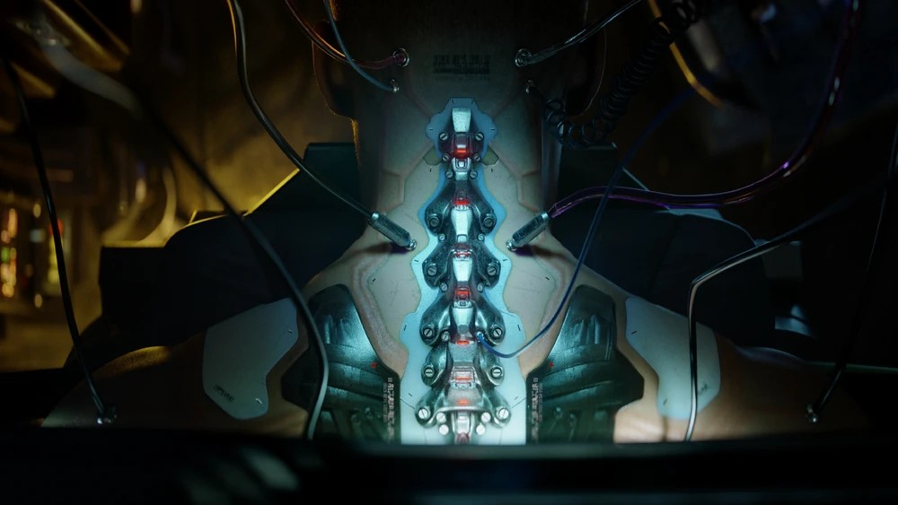
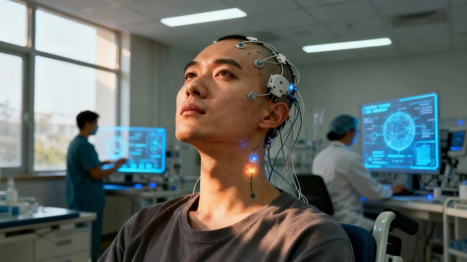

NEUROWARE operates at the convergence of cognition and machine architecture, where thought is no longer confined to biology but extended through engineered precision. We design systems that refine perception, accelerate intelligence, and dissolve the boundary between human intent and digital response.
In a world defined by signal noise and fractured attention, our work restores clarity—silent, seamless, and absolute.
Our Company
Identity
NEUROWARE is a private research and development entity operating at the frontier of neural augmentation and cybernetic integration. Our work spans cognitive enhancement systems, synthetic neural interfaces, and precision-engineered cyberware designed to extend human capability beyond organic limitation. Every system is built with a single directive: to refine the interface between mind and machine until no distinction remains.
Capabilities
We develop integrated cybernetic systems designed to extend human performance across cognitive, sensory, and motor domains. Our core research focuses on adaptive neural interfaces, biomechanical reinforcement, and modular augmentation platforms engineered for scalable compatibility across biological profiles.
Products
Our product architecture is structured around modular enhancement systems, each engineered for precision integration and long-term stability. Current deployment classes include ocular augmentation arrays, reflex acceleration frameworks, and cortical interface nodes. All systems undergo multi-stage calibration prior to release within controlled distribution networks.
Cyberware Integration

Enhancement
Integration is treated as a continuous adaptation cycle rather than a single procedure. Each NEUROWARE system responds dynamically to host feedback, refining output latency, signal clarity, and biomechanical harmony over time. The objective is not enhancement as addition, but convergence toward operational unity.
Access
Access to NEUROWARE systems is restricted to verified clients operating within approved jurisdictions. Acquisition pathways include direct consultation, licensed distributor channels, and secured deployment agreements. All installations require compatibility screening to ensure system integrity and user stability.
We do not upgrade humanity. We refine its operating condition.